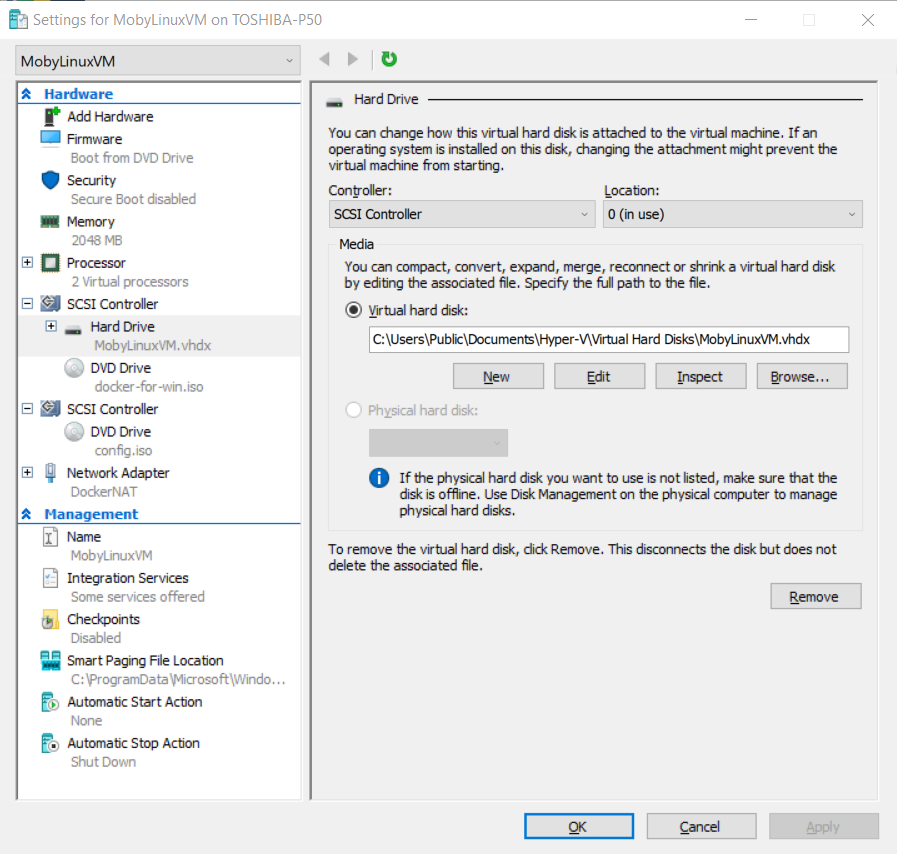

Docker for Windows
Posted on May 06, 2018 in DevOp Updated: May 21, 2018
For a development project I needed Docker for Windows (D4W).
In this blog I'll install Docker. Playing with it I'll do in another post.
Prerequisite
- Install Git for Windows - This will install
Git Bash - Optional Install cUrl CLI on Windows - This will ensure that you can call a remote end over SSL
Install
You download Docker CE for Windows here.
Docker wants to know if you want to use Windows or Linux containers - Since I'll deploy to Linux in production, I also choose Linux here. Linux will ususally be the cheepest choise in cloud.
The version I installed was 18.03.1-ce-win65.
Note: The installer will log you out to be able to finish.
1st test drive
When starting Docker from the Desktop Icon I was met with:
Docker will disable VirtualBox. Oh-oh - I am using VirtualBox for OpenShift - so I don't want that option.
When I press cancel I get:
Damned - I don't have other option than to let the bastard disable VirtualBox - I wonder if this disabling is only for Docker4Windows... I'll bite the grasss and do as I'm told.
2nd test drive
Ok, so 2nd time I started Docker I chose OK to enable Hyper-V and Container services. That also required a restart.
When it was done enabling and restarting it still needed some time to boot the Docker VM. Meanwhile I could take a look and see what the installation had done.
It had enabled the Windows features Containers and Hyper-V as it told me
It had enabled two Hyper-V Virtual Ethernet Adapters, but my VirtualBox networks remained. I wonder if I easily can switch to VirtualBox then?
When it was done starting the Docker VM I could see it running in Hyper-V manager
It was called MobyLinuxVM

Docker4Win wanted me to login to Docker Cloud. Docker Cloud uses Docker Hub as image registry, so even though I won't use Docker Cloud at this time, I'll need to be logged in to Docker.
Docker4Win GUI disappears, when you log in - but then you go to TaskBar-Notification area to find Docker4Win. Choose Settings
I unchecked Start Docker when you log in. Then I hope I can be using VirtualBox, too. I am unsure if I have to disable Hyper-V and/or Container services before that is possible. I'll come back with an update later.
After boot Docker VM will not be running, but you'll have docker client somewhere on the PC:
docker -v
# Docker version 18.03.1-ce, build 9ee9f40
But while the VM is not running you'll get an error, when calling the VM:
docker images
# error during connect: Get http://%2F%2F.%2Fpipe%2Fdocker_engine/v1.37/images/json: open //./pipe/docker_engine: The system cannot find the file specified. In the default daemon configuration on Windows, the docker client must be run elevated to connect. This error may also indicate that the docker daemon is not running.
Workflow
After boot you'll be able to do like this:
- Start D4W from the Desktop icon - and wait for the Docker animation in the taskbar-notofication-area to end - then Docker VM has started
- Call D4W:
docker images
# REPOSITORY TAG IMAGE ID CREATED SIZE
- Do some more work from bash e.g. read Docker Succinctly
AddOns
The Docker taksbar menu gives you an option called Kitematic. When you select the menu you'll start downloading Kitematic.
Kitematic is a GUI on top of your Docker CLI.
Here I even have the option to switch back to VirtualBox. I'll do that later.
I wonder if that switch will work - changing shell from powershell to bash did not work - Kitematic is in time og writing only in Alpha.
Links
Learn
Hosts
- Docker Cloud
- The Public Docker Image Registry Docker Hub
Other installation
- cUrl CLI on Windows
- Running Docker containers on Bash on Windows
- vue-storefront Installing on Windows.md
The End.